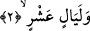

Tibyân’da gelmiştir ki bu âyet Tâif’te ve başka zamanlarda Hz. Peygamber (s.a.)’in
parmaklarından su akması mûcizesine işârettir. Yine bu âyetin Hz. Sâlih (a.s.)’ın
devesinin kayadan çıkmasına ya da pınar ve menbalardan suların fışkırmasına yâhut
Mûsâ (a.s.)’ın taşa vurmasıyla suyun fışkırmasına veya buluttan yağmur boşalmasına ya
da günahkârların gözlerinden gözyaşı gelmesine işârettir.
Bu sebeple her iki gözünün çeşmelerini akıt
Üzerinde kir, pas namına ne varsa yıka, temizle.
2. On geceye (haccın on gecesine),
Bu “on gece” Zülhicce ayının ilk on gecesidir. Araplar gece deyince o gecelerin
gündüzlerini kasdederler. Ya da bu “on gece”den maksad Ramazan ayının son on
gecesidir.
Gece kelimesinin nekre getirilmesi tâzim ifâde etmek içindir. Çünkü bu geceler
başkalarında olmayan bir takım faziletlerle tahsis edilmiştir. Bundan dolayı Allah bu
gecelere yemin etmiştir. Bu faziletlerden birisi de Zülhicce ayının ilk on gününde hac
amelleriyle meşgul olmaktır. Bir hadiste Hz. Peygamber (s.a.): “Allah katında Zülhicce
ayının on gününde yapılan bir hayırdan ne daha iyi, ne de sevabı daha büyük bir
amel vardır.” buyurdu. Bunun üzerine: “Allah yolunda cihad eden de mi?” denildi. Hz.
Peygamber (s.a.) şöyle cevap verdi: “Allah yolunda cihad eden de. Ancak kendi malı
ve canıyla cihada çıkıp da bunlardan hiçbir şeyi geri getirmeyen/şehit düşen hariç.”
[92] Bu hadiste cihada çıkan kimsenin evinden çıkarken bir daha geri dönmemeye niyet
etmesi gerektiğine işâret vardır. Allah Teâlâ dilediğini yapar.
Ramazan ayının son on gününün şerefine gelince bin aydan daha hayırlı olan kadir
gecesinin bu gecelerde aranması (fazîletini anlatmak için) yeterlidir.
Bu “on gece”nin âşurâ gününün de içinde olduğu Muharrem’in on gece ya da içinde
Berat gecesinin de olduğu Şaban ayının ortasında bulunan on gecedir.
Baklî şöyle der: Bu on gece, Allah Teâlâ’nın günlerinde gökleri ve yeri yarattığı altı
gün ile Âdem (a.s.)’ın yaratıldığı gece/gün, gündüzünde kıyametin kopacağı gece,
Allah’ın Hz. Mûsâ (a.s.) ile konuştuğu ve Hz. Peygamber (s.a.)’e isrânın meydana
geldiği gecedir.
Kâşânî der ki: Allah, rûhun bedene taallukunun ilk tesiri ortaya çıktığı zaman rûhun
nurunun beden maddesi üzerine zuhûrunun başlangıcına yemin etmiştir. Yine “on
geceye”, kemâli elde etmenin sebep ve araçları olduğu için rûhun bedene taalluku
sırasında taayyün eden zâhir ve bâtın hislerin yerlerine yemin etmiştir.
et-Te’vîlâtü’n-Necmiyye’de der ki: Allah mü’minin kalp toprağından bir tek